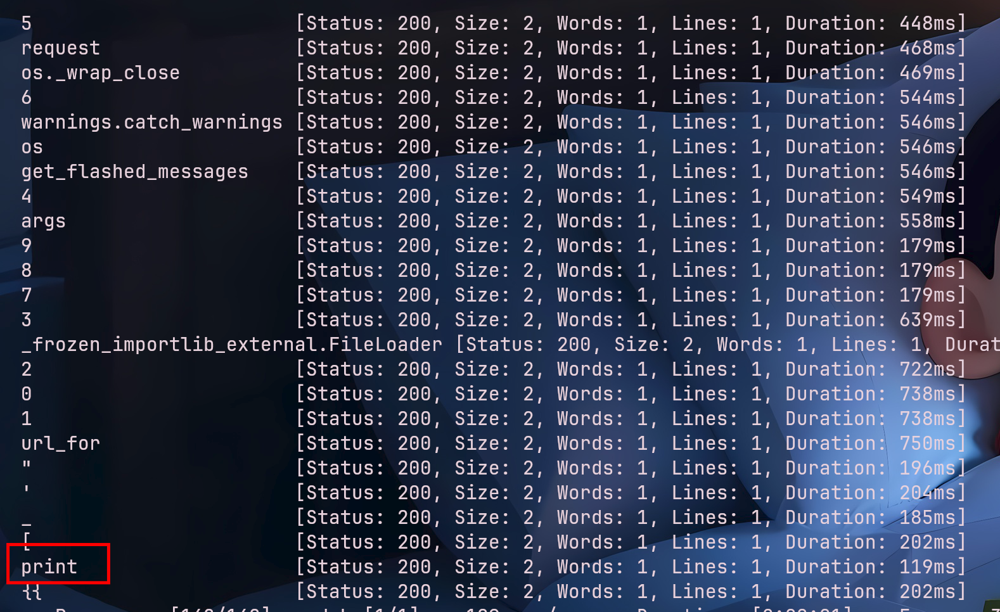

web371-ssti-print过滤-下划线-引号-数字

1.模糊测试新增过滤print
{%%}

1 | |
1 | |
1 | |
cmd的值通过以下脚本获得，本人所写还是比较好看懂的
1 | |
因为python的eval不能直接执行命令只能执行python表达式，有以下命令可以使用
1 | |

本博客所有文章除特别声明外，均采用 CC BY-NC-SA 4.0 许可协议。转载请注明来源 Lengkur！
相关推荐

2026-01-16
web369-ssti-下划线绕过-引号绕过-[]绕过-{{绕过-过滤request
1.get传参变量name为ssti注入点，经过模糊测试过滤如下，寻常调用对象和类的方式都被过滤了 1ffuf -u "http://11a5d5b2-d9ba-490f-86bc-df70f91a8b56.challenge.ctf.show/?name=FUZZ" -...
2026-01-21
web185-sql-布尔盲注-引号过滤-数字过滤-=过滤
新增数字过滤，在sql中true值为1，concat有自动转换字符串机制，得到的值会直接转为数字字符 所以还要配合char来构造各种字符（下图true总共97个） 由于过滤了引号，所以也不能用like了，但是可以用regexp代替，用于正则匹配 写脚本 12345678910111213...
2026-01-16
web161-文件上传-.user.ini+远程文件包含
1.先上传一个.user.ini配置文件，这要加上GIF89a，这是GIF文件的图片头，以便绕过过滤 12GIF89aauto_prepend_file=shell 意思为在所有php文件前插入shell文件的内容 当然上传这种配置文件要求当前目录要有.php文件，可以扫描目录发现有个i...
2026-01-29
Intrasight-SSRF-SSTI
进来就有一个写url的，弹一个本地url发现会响应源码，这很明显是ssrf，前面折腾了很久无果，后来重新看了这提示，说的是内网有public_web，admin_panel还有一个不知道什么的服务，有服务肯定要占用端口吧，于是我用bp爆破了一下 发现8001直接说明是admin_pane...
2026-01-20
固若金汤-热身题-session伪造-flask-ssti
题目提示扫目录 发现.git泄露，用rip-git把.git还原 1rip-git -u http://ctf.furryctf.com:33061/.git 审计app.py文件查看路由/login，可以看到，无论怎么登录都是不行的 12345678910111213141...
2026-01-20
web183-sql-布尔盲注-空格过滤-=过滤
可以看到sql语句用来查pass的记录数(pass和用户的数量是相等的)，这里过滤了很多字符，我们可以用()来绕过空格 我们可以用“表中有没有这条数据”的思路来猜字符，如 12345tableName=(ctfshow_user)where(pass)like'ctfshow%&#...